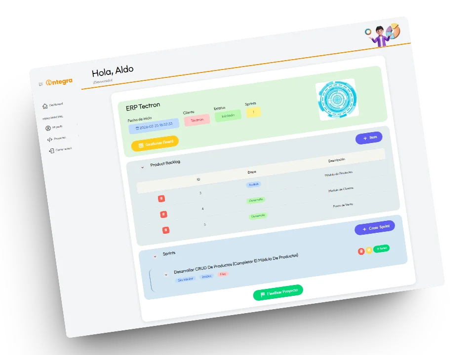

ü뮂Äçüéì
Aldo Gutiérrez
Web Developer
+2 years of work experience in web development, I specialize in technologies both Frontend and Backend, including the use of frameworks such as jQuery, Vue.js and Tailwind.
A graduate of Virtual Environments and Digital Business, I also have a deep interest in Graphic Design and Digital Illustration, which I enthusiastically integrate into the creation of attractive and functional web interfaces.
In addition to my technical experience, I have developed strong skills in communication and customer relationship management by working closely with them.
EXPERIENCE
Digital Trajectory
üíª
Integra Connective
Web Developer Full Stack
2022 - present
PROJECTS
Recent Work

Dynamic project control with Scrum
Scrum-based web system for internal project management
HTML CSS Bootstrap jQuery Ajax PHP MySQL Drag&Drop DataTables Scrum
Vue Nuxt Tailwind Netlify CMS Git/GitHub Markdown posts Dynamic publication Cloudfare
UX/UI Interactive Design jQuery Bootstrap Netlify GitHub Responsive Trends 2023 Figma
ERP Systems in Integra Connective
ERP systems developed in Integra Connective for different companies
Dynamic Web API Rest/SOAP PHP Sessions MVC Excel Reporting PDF Generation Statistics Graphs

Blender Model Viewer Tailwind Interactive Design 3D Modeling Immersive Experience Product Visualization
UX/UI Interface Design Responsive Vue Tailwind Videogames Modern Design
SKILLS
Academic and Work skills
üé® Frontend
HTML5 CSS3 Tailwind Bootstrap JavaScript Vue Angular jQuery AJAX
üîô Backend
PHP MySql
ü뮂Äçüé® Prototyping
Figma
üíª Versioned
Git GitHub
ü߆ Relevant Knowledge
UI Design Responsive Design API Integration
üåé Languages
English French